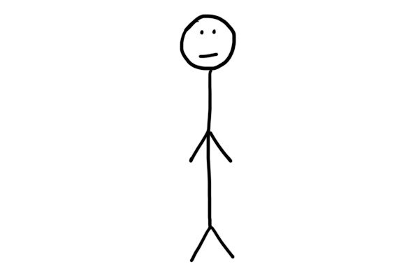
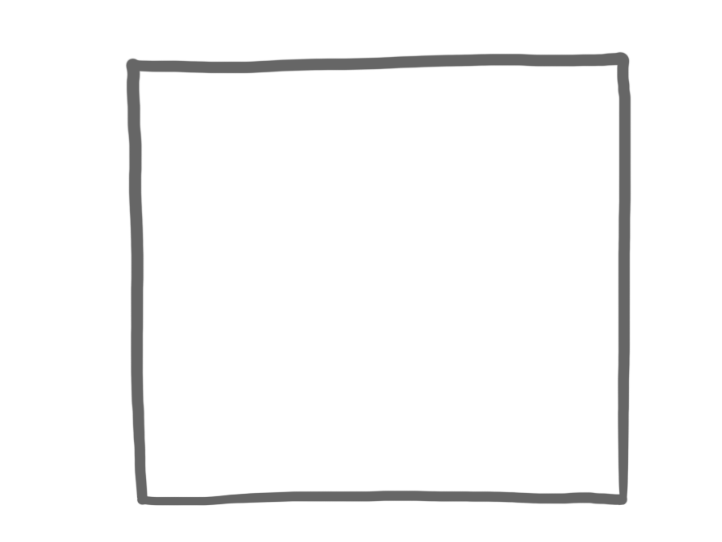
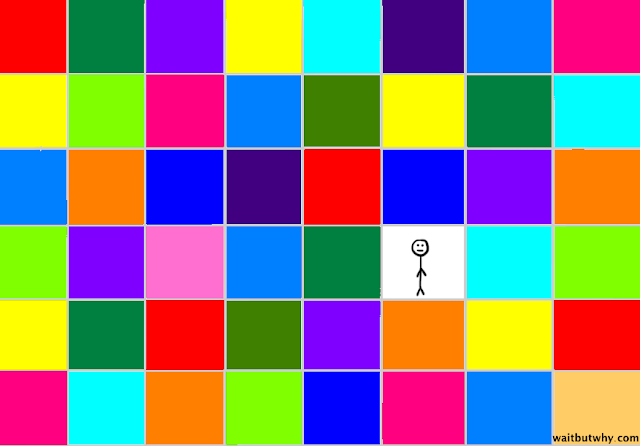

زندگی یه تصویره اما ما توی یه پیکسل زندگی می کنیم!
خب، این ممدِ قصه ای ما است:

و اینم امروزِ:

ظاهرا ممد و امروز با هم رابطه دارند:

رابطه نبستا خوب پیش می ره و ممد هم خوشحال به نظر می رسه، اما مدتیه که ممد متوجه شده امروز اون روزی نیست که قبلا باهاش قرار می زاشت. اونا بعضی وقت ها با هم خوش می گذورنن ولی ممد همش این احساس رو داره که با یه دوشنبه تکراری و بدون هیجان داره وقت اش رو می گذرونه. این قطعا رابطه ای نیست که ممد دوست داشته باشه براش برنامه بریزه و بلند مدت بهش فکر کنه. ممد ما دنبال یه چیز هیجان انگیز تر می گرده. چون اون میدونه که این رابطه موقتیه، پس خیلی هم انزژی براش نمی زاره و بیشتر فکرش درگیر فکر کردن به کسه دیگه ایه. فردا، فردا کسی که ممد دوست داره باهاش وارد رابطه بشه، پرشور و هیجان انگیز. اون میدونه که باید صبر کنه تا فردا اش برسه. زمانی این فردا می رسه که ممد تو شغل اش موفق شده باشه و توی یه شهر رویایی زندگی کنه. ممد ما به یه همچین چیزی فکر میکنه :

اون می دونه که فردا حتما یه روزی میرسه، در همین حال ممد یه برنامه ای دیگه ام داره. هفته ای دیگه قراره یه افزایش حقوق تپل بگیره و به محض اینکه این اتفاق بیفته با امروز بهم میزنه و دنبال رابطه با یه روز دیگه می گرده. چه روزی؟ روزی که حقوق ممد زیاد می شود! البته درسته که اون روزم در حد و اندازه های ممد نیست و به رابطه بلند مدت بهش فکر نمی کنه. اما بهرحال از روزی که الان باهاش رابطه داره خیلی باحال تر و هیجان انگیز تره. صبح روزی که ممد افزایش حقوق اش رو میگیره، خیلی خوش حال تر از خواب بیدار می شه و روز جدیدش رو ملاقات می کنه! حالا اون یه آدم جدید شده با یه روز جدید، ممد همین الانم ازش خوشش اومده.

درست همون شب ممد می ره یه رستوران گرون که تا همین دیروز جرئت نمی کرد بره. ممد ما یه آیفون آخرین ورژن هم می خره تا روز خودش رو تکمیل کرده باشه. الان وضعیتش اینجوریه:

دو هفته از ماجرا می گذره و ممد دوباره می ره همون رستوران، اما انگار یه چیزی فرق کرده غذاش هنوزم خیلی خوش مزه است ولی اون کیف دفعه ای قبلی رو نداره، انگار یه مشکلی هست.

یه ماه بعد از این ماجرا وقتی که میره گوشی خودش رو عوض کنه و نسخه ای جدید تر آیفون رو بگیره. با خرید گوشی جدید حس و حال اش هیچ تغییری نمی کنه، برای ممد این خیلی عجبیب بود. تا اینکه چند روز بعد بیدار می شه و می بینه که امروز خیلی شبی همون روزیه که ترکش کرده بود. ممد کلا گیج شده و متوجه نمی شه که، چرا کسی رو که ترک کرده بود دوباره برگشته. چرا دست از سرش ور نمی داره؟ ممد ما الان اینجوری به سر میبره:

شرایط یه مقدار ناامید کننده شده، اما مشکل جدی نیست و ممد داره خودش رو جمع و جور میکنه و می دونه که این افزایش حقوق، خیلی هم قرار نبود تغییر خاصی ایجاد کنه. و تمرکز اش رو میزاره روی اون فردای که می دونه به زودی می رسه. حالا خیلی هم مهم نیست که الان خوش حال نیست و اون فردا بلاخره می رسه. چند سال به همین منوال می گذره و حالا ممد، یک هفته ای خیلی مهم در پیش داره. اول از همه، بعد از چندین سال مجرد بودن با یه دختر فوق العاده ملاقات می کنه و خیلی سریع از هم خوششون میاد. دختره دقیقا همون کسی که ممد ما سال ها انتظارش رو می کشید. بعد از چندتا قرار ملاقات الان دیگه به هم نزدیک شدن. دقیقا تو همین زمان استارتاپی که ممد و چند تا از همکاراش پارسال راه انداختن گرفته و اینور و اونور خبرساز شده. ممد می دونست که این کارش بالاخره می گیره. به نظر میاد فردا بالاخره از راه رسیده. همون فردای که توش ممد هم توی شغل اش خیلی موفقه هم یه همسر خیلی مناسب برای خودش پیدا کرده. این روزی بود که ممد رویاش رو داشت.

این همون زندگی ایکه ممد می دونست بلاخره بهش می رسه. دوشنبه های ممد دیگه قرار نیست معمولی و خسته کننده باشه و اون امروز تکراری دیگه سر و کلش هیچ وقت پیدا نمی شه. خیلی طول نکشید که ممد متوجه شد، کم کم داره اتفاقایی می افته.
بعد از چند ماه با اینکه رابطه اش با پاتنرش داره خوب پیش میره و استارتاپ اش حتی بیشتر هم پیشرفت کرده، اما ممد دیگه اون قدر هم هیجان نداره و همه چی داره براش معمولی می شه. سرش از قبل خیلی شلوغ تر شده و همیشه در حال کاره. درسته که هنوز هم از امروزش اش راضیه ولی دیگه مثل چند ماه پیش شرایط خیلی باب دل اش نیست. اینجوریاس:

یک سال از این داستان می گذره. ممد الان خیلی پول دارتر شده. اما همه ای اینا دیگه براش کاملا عادی شده. یکی از دوستاش توی شغل اش حتی از ممد هم موفق تره و ممد به این فکر می کنه که، اگه جای اون بود شاید حال دل اش بهتر بود. یکی دیگه از دوستاش، بیشتر با پاتنرش خوش می گذورنه و ممد با خودش فکر میکنه که چقدر خوب می شد اگه منم با پاتنرم این جوری باشم. و اما ... ممد یه روز از خواب بیدار می شه و میبینه که دوباره اینجاست:

ممد باورش نمیشه. دوباره اون (امروز) اینجا چه غلطی میکنه؟ ممد تصمیم میگره که یه حکم منع ملاقات برای امروز بگیره که دیگه مزاحم اش نشه، اما بعد بیخیال اش می شه. مثل اینکه قرار نبود با "روزی که شریک زندگیم رو پیدا می کنم و تو شغلم موفق می شم" هم رابطه ای طولانی داشته باشه. حالا روز واقعی که ممد براش تلاش میکنه روزیه که استارتاپ اش رو می فروشه و با پارتنرش ازدواج میکنه. این اون روزیه که ممد فکر می کنه واقعا خوشحال می شه.
پایان داستان
مشکل زندگی ممد برای همه ای ما آشناست و به نظر هیچ وقت حل نمی شه. این مشکل یه جورایی به نظریه ای پیکسل مربوط میشه که، الان باهم راجب اش صحبت می کنیم. مشکل اینکه، ممد زندگیش رو یه تصویر پر رنگ و لعاب می بینه که یه داستان شنیدنی و حماسی رو روایت می کنه، و فرض اش اینکه خوشبختی ایش توی بهتر و زیبا تر کردن این تصویر کلی خلاصه می شه. در حالی که این مدل نگاه اشتباه است. چون ممد داخل یه تصویر زندگی نمی کنه، بلکه اون داره داخل پیکسل های این تصویر زندگی می کنه. هر روزی تو یکی از این پیکسل ها، اون باید یاد بگیره که چجوری از پیکسل ها (روزهای معمولی) لذت ببره.

بنابراین در حالی که هزاران روز معمولی با ممد وارد رابطه می شند. ممد پیکسل ها رو فراموش کرده و داره تمام تلاش اش رو می کنه که تصویر کلی بهتری برای خودش بسازه. در حالی که دوشنبه ای معمولی چیزیه که داره زندگی و تجربه اش می کنه. تصور ممد باعث می شه که همیشه فکر کنه رابطه اش با امروز موقتیه. در حالی که رابطه اش با امروز همیشگی و اجتناب ناپذیره، ممد باید این رو قبول کنه و امروز رو در آغوش بگیره تا بتونه خوش حال زندگی کنه.
تصویر کلی چیزیه که افراد دیگه از زندگیمون می بینند و ممکنه بر اساس اون بگن که وای به شما چقدر خوش می گذره. مخصوصا تو زمانی که ما زندگی می کنیم و با شبکه های اجتماعی، این تصویرِ کلیِ که خیلی ارزشمند شده و تمام افراد تلاش می کنند که تصویر خیلی بهتری داشته باشند. آدام ها به خودشون می گن: من باید سعی کنم تصویر زندگی ایم رو اینطوری کنم تا بتونم لذت ببرم، ببین طرف این دست آوردها رو داره و خوشبخته. فقط وقتی که به آدم ها به اندازه ای کافی نزدیک می شیم می فهمیم که مهم نیست تصویر زندگییشون چه شکلیه در نهایت اون ها هم همون دغدغه ها رو دارند و تلاششون اینکه از زندگی روزانه و تکراری ایشون لذت ببرند. یا خودشون رو با وعده ای اینکه اگه به فلان دست آورد برسم بعد اش خوشحال می شم گول می زنند.
زمانی احساس خوش حالی می کنیم که از روزهای معمولی و دوشنبه های تکراری لذت ببریم و یه روزمره خوب داشته باشیم. برای اینکه ممد ما توی دوشنبه های معمولی زندگیش بیشتر لذت ببره. یه سری کار میشه کرد که از نظر عملی ثابت شده که رضایت شخصی رو بالا می بره، از جمله گذروندن وقت با افرادی که دوستشون دارید، خوب خوابیدن و ورزش کردن، انجام کارهایی که تو اونا مهارت دارید، مهربونی کردن، و خیلی کارهای دیگه که خودتون هم می دونید.
Tim Urban نویسنده نسخه ای اصلی این داستان یه بلاگ دیگه داره راجب انتخاب شریک زندگی که توش به یه نکته ای خیلی ضریفی اشاره می کنه که بی ربط به بحث مون نیست. میگه:
کسی رو انتخاب کنید که بتونید 10 هزار شب معمولی باهاش شام بخورد و از اون شام لذت ببرید نه کسی که ممکنه مراسم عروسی بهتری باهاش داشته باشید. (بر اساس پیکسل انتخاب کنید نه بر اساس تصویر بیرونی)
سخن پایانی: این متن اقتباسی از بلاگ Tim Urban بود که همه ای ما مفهوم اش رو تا حالا درک کردیم ولی هر چند وقتی نیاز به یادآوری داریم. گفتم احتمالا برای افراد دیگه هم یادآوری خوبی باشه و به خیلی از دوستام پیشنهاد کردم ولی از اون جایی که همه توانایی خوندن متن انگلیسی رو ندارند تصمیم گرفتم نسخه ای فارسی، از اون چه که خودم درک کردم رو بنویسم. من در زمینه ای نویسندگی، مهارت و دانشی ندارم و همیشه در نگارش مشکل داشتم. اما سعی کردم مفهوم نسخه ای انگلیسی رو تا حد امکان انتقال بدم و جذابیت اش رو حفظ کنم. در نهایت امیدوارم این مطلب براتون مفید بوده باشه و دوشنبه های معمولی بهتون خوش بگذره.
- از دوستام که تو نوشتن اش کمک ام کردن ممنونم، خودشون می دونند!
نویسنده: سجاد ایوبی ام از تهران 😄 اگه می خواید بیشتر با من آشنا بشید اینجا رو چک کنید!
منابع اصلی: